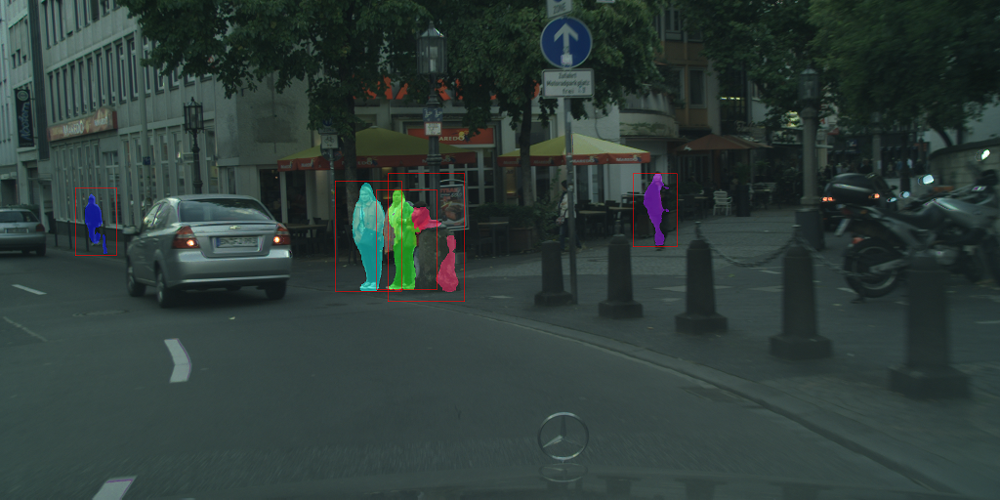
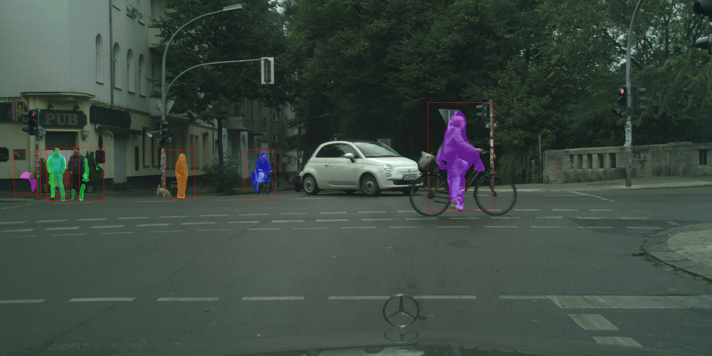

Instance Segmentation Using SSD Feature Maps
| Dhanvin Kolhatkar, Robert Laganiere University of Ottawa Ottawa, ON, Canada |
|
|---|---|
| Questions? Drop us a line | |
Overview
Instance segmentation is a computer vision task that mixes the tasks of semantic segmentation and object detection. We not only wish to seperate each class within the image at a class-level (semantic segmentation) but also to seperate the different instances within each class: each person, each car, each bus, etc.
Our work consists of taking the popular SSD (Single Shot Detector) object detection method and adding a mask prediction branch that generates instance segmentation for each object that is detected by the object detection branches.
Click here for more
Demos
Since our work on this task is still in progress, this section only contains some results from our proof-of-concept. They were generated by manually cropping an image based on the output of an SSD network and feeding those cropped bounding boxes to a separate segmentation CNN. The goal of this work is to merge those two redundant steps into a single network to have a more efficient instance segmentation method which uses the feature maps generated by the SSD network for object detection. The thin red boxes show the lines along which we cropped from the original image while the coloured pixels show the instance segmentation output of our second CNN. Note that in this example, we segmented pedestrians only.

